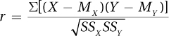
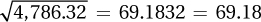
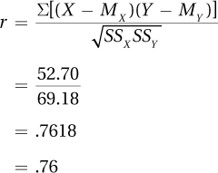
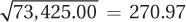
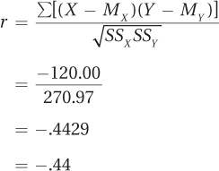

To learn how to calculate a Pearson r, imagine some data collected by a marriage therapist. Dr. Paik was interested in seeing whether there was a relationship between gender role flexibility and marital satisfaction. Gender role flexibility refers to the ability to express both male and female traits. Dr. Paik wanted to find out if women’s marital satisfaction correlated with how gender role flexible their husbands were.
To measure gender role flexibility, he used the Role Flexibility Test (RFT). The RFT is scored on an interval level and scores range from 0 to 40. Higher scores mean more role flexibility. To measure marital satisfaction, he asked the women to grade their husbands A–F on a number of dimensions. He averaged these grades together, and then he calculated a marital “GPA.” Just like an academic GPA, a marital GPA ranges from 0 to 4, with 0 = F and 4 = A.
494
Dr. Paik obtained a random sample of eight heterosexual married couples from his city and measured two characteristics for each couple (see the data in Table 13.3). X was the husband’s level of gender role flexibility, and Y was the wife’s rating of marital satisfaction. Dr. Paik’s question was simple. He did not specify a direction, direct or inverse, for the relationship, he just wanted to know: Are the two variables related?
Step 1 Pick a Test
The first step in hypothesis testing involves picking the correct statistical test. Here, one group of cases (N = 8) is used to examine the linear relationship between two interval/ratio level variables. This calls for a Pearson r.
Step 2 Check the Assumptions
The Pearson r has four assumptions that should be met in order to proceed with the test. Three of the assumptions are familiar (random sample, independence of observations, and normality). One assumption, linearity, is new.
Random sample. This assumption says that the sample in which the correlation is being calculated is a random sample from the population to which the results will be generalized. As with t tests and ANOVAs, the random sample assumption is robust to violation. With the marital satisfaction study, the random sample assumption is not violated. This is one of those rare times there is a random sample. The researcher can generalize the results of the study to the whole city. However, the sample size is small, so replication should be on Dr. Paik’s mind already.
495
Independence of observations. This assumption says each case in the sample is independent of every other case, that the cases don’t influence each other. This assumption is not robust, so a researcher shouldn’t use the Pearson r if it is violated. Even though the cases are couples, the independence of observations assumption is not violated for the marital satisfaction study because each couple was measured individually and was only in the sample once.
Normality. This assumption says that each of the variables in a Pearson r, both X and Y, is normally distributed in the population. This assumption is robust to violation, especially if the sample size is large. The normality assumption is not violated for the marital satisfaction data. It seems reasonable to assume, in the larger population of the city, that both gender role flexibility and marital satisfaction are normally distributed.
Linearity. This assumption is a new one. It says that the relationship between the two variables in the population is a linear one. The linearity assumption is tested by making a scatterplot for the data. If the dots in the scatterplot fall on a curve, as they do in Figure 13.12, then this assumption is violated. If the dots form an irregular shape, like that seen in Figure 13.13, or fall in a straight line, then the linearity assumption is not violated. This assumption is not robust, so if it is violated, the test should not proceed. The scatterplot for Dr. Paik’s data appears in Figure 13.15, which shows the points falling roughly along a straight line that moves up and to the right. The shape is not curvilinear, so the linearity assumption is not violated for the marital satisfaction data.
496
With no assumptions violated, Dr. Paik can proceed to the next step.
Step 3 List the Hypotheses
The null and alternative hypotheses are statements about populations, not samples. For the population value of a correlation, the Greek letter rho, ρ, will be used as the abbreviation. Though ρ looks like the letter “p,” it is the Greek letter “r” and is pronounced “row.” ρ represents the population value of a correlation, while r is the value of a correlation when it is calculated for the data in a sample. The correlation coefficient Dr. Paik is calculating for the sample of eight cases in the marital satisfaction study is an r. If the correlation coefficient were calculated for all the married couples in the city, it would be a ρ, a population value.
For a nondirectional or two-tailed test, the null hypothesis states that there is no relationship, in the population, between X and Y. This is expressed by saying that ρ equals zero:
H0: ρ = 0
The alternative hypothesis says there is some relationship between X and Y in the population. It might be a strong relationship (near 1.00), a very weak relationship (say, .01), or anywhere between those extremes. It might be a positive relationship or it might be a negative relationship. It just is something other than a zero-relationship. So, the alternative hypothesis is
H1: ρ ≠ 0
If a researcher has a directional hypothesis, then he or she would specify what the expected direction of the relationship is before any data are collected. This direction is then stated as the alternative hypothesis. For example, if the researcher expected a direct relationship between X and Y, that is, a correlation coefficient with a positive sign, then the alternative hypothesis would be ρ > 0; for an expected inverse relation, the alternative hypothesis would read ρ < 0. The null hypothesis is then set so that the two hypotheses together are all-inclusive and mutually exclusive. If the alternative hypothesis is ρ > 0, then a null hypothesis of ρ ≤ 0 would satisfy those criteria.
Step 4 Set the Decision Rule
The sampling distribution of r is based on the population value of the correlation being zero. If the null hypothesis is nondirectional, then the sampling distribution of r would look like Figure 13.16. Note the following points about the sampling distribution:
All the values of r fall from –1.00 to 1.00.
The distribution is centered on zero, and r = .00 has the highest frequency.
The distribution is symmetric. One is just as likely to draw a random sample that has a negative r as a positive r.
As one moves away from r = .00, the frequencies become smaller.
497
As with the sampling distribution for t and F, this sampling distribution can be divided into common and rare zones:
The common zone is the middle section of the sampling distribution, the section centered around zero where it would be common to find the r value for a sample when the null hypothesis is true.
The rare zone is the extreme sections of the sampling distribution. If the null hypothesis is true, it is rare to find a sample r value that falls in this section.
The decision rule for the Pearson r is similar to the other tests:
If the value of r calculated for the sample falls in the rare zone, reject the null hypothesis.
If the value of r calculated for the sample falls in the common zone, fail to reject the null hypothesis.
The boundary between the common zone and the rare zone is called the critical value of r, abbreviated rcv. Most commonly, the rare zone is set to be 5% of the sampling distribution. Phrased in the language of statistics, this means alpha (α) is set at .05, giving a 5% chance of a Type I error.
Besides deciding what alpha level to use, a researcher has to decide whether to do a one-tailed or two-tailed test. With a one-tailed test, the hypotheses are directional, so the entire rare zone is placed in one tail of the sampling distribution. A directional alternative hypothesis makes a statement about the direction of ρ, such as ρ > 0 or ρ < 0. Directional hypotheses need to be stated before data are collected.
With a two-tailed test, the hypotheses are nondirectional, so the rare zone is split evenly between the two tails. Two-tailed tests are more common. For example, the hypotheses for the marital satisfaction study are nondirectional, with the alternative hypothesis simply stating ρ ≠ 0. The hypotheses are nondirectional because Dr. Paik hasn’t predicted whether higher gender role flexibility scores or lower gender role flexibility scores are associated with more marital satisfaction.
Two-tailed tests with α = .05 are the “default” option for the Pearson correlation coefficient. This is what Dr. Paik plans to use. When there is a two-tailed test and α = .05, the middle 95% of the sampling distribution is the common zone and the rare zone is made up of the 2.5% on the far left of the sampling distribution and the 2.5% on the far right. The sampling distribution for the marital satisfaction study, with the rare and common zones marked, is shown in Figure 13.17.
498
Critical values of r are listed in Appendix Table 6, a portion of which is in Table 13.4. Finding the critical value of r follows the same process as finding a critical value of t:
First, select a column to use based on whether it is a one-tailed test or a two-tailed test and what the level of alpha is.
499
Then, find the row that contains rcv by selecting the row with the correct degrees of freedom. (If there is no row for the degrees of freedom one needs, follow The Price Is Right rule and use the row for the degrees of freedom that is closest without going over.)
Equation 13.1 shows how to calculate degrees of freedom for a Pearson correlation coefficient.
df = N – 2
where df = degrees of freedom
N = number of cases in the sample
For the marital satisfaction study, there are eight cases in the sample, so N = 8. Applying Equation 13.1, Dr. Paik determines df = 6:
df = N –2
= 8 –2
= 6
Looking in the table of critical values of r, the intersection of the row where df = 6 and the column where α = .05, two-tailed, we determine that the critical value of r is .707. There is no sign attached to this critical value. Dr. Paik has opted for a two-tailed test and the sampling distribution is symmetric, so rcv = ±.707. The decision rule can now be written for the marital satisfaction study:
If r ≤ –.707 or if r ≥ .707, reject H0.
If –.707 < r < .707, fail to reject H0.
Step 5 Calculate the Test Statistic
Equation 13.2 is the computational formula for calculating the Pearson r. Computational formulas are mathematically easier than definitional formulas. Equation 13.2 may look complex, but it isn’t difficult when broken down into chunks.

where r = Pearson correlation coefficient
X = a case’s score on variable X
MX = mean score on variable X
Y = a case’s score on variable Y
MY = mean score on variable Y
SSX = sum of the squared deviation scores for variable X
SSY = sum of the squared deviation scores for variable Y
500
The easiest way to complete Equation 13.2 is in three pieces: one for the numerator, one for the denominator, and one to finish the division.
The Numerator. There are four steps in calculating the numerator:
Take each X score and subtract the mean of the X scores from it. The resulting values are the X deviation scores.
Take each Y score and subtract the mean of the Y scores from it. The resulting values are the Y deviation scores.
For each case, multiply the two deviation scores together.
Add up all the multiplied pairs of deviation scores. This sum is the numerator in Equation 13.2.
The Denominator. There are six steps in calculating the denominator:
Take each X deviation score and square it.
Add up all the squared X deviation scores. This results in the sum of squares for X, abbreviated SSX.
Take each Y deviation score and square it.
Add up all the squared Y deviation scores. This results in the sum of squares for Y, abbreviated as SSY.
Multiply SSX from Step 2 by SSY from Step 4.
The square root of the product found in Step 5 is the denominator in Equation 13.2.
Final Calculations. The last step in calculating Pearson r is to take the numerator and divide it by the denominator, yielding the r value.
Doing the Calculations. The marital satisfaction data are re-presented in Table 13.5. The first two columns contain the X value and the Y value for each case (the same information as in Table 13.3). But, Table 13.5 contains five new columns (numbered as columns 3–7), each of which will be explained below as it is used.
501
To find Pearson r, calculate the numerator first:
Column 3, labeled “X –MX,” is used to calculate deviation scores for the X variable. It is completed by subtracting the mean for the X scores, which is 25.00 here, from each X score. The first case has an X score of 8.00, so the deviation score is 8.00 – 25.00 = –17.00. To complete column 3, repeat this step for each of the X scores.
Column 4, labeled “Y – MY,” calculates deviation scores for the Y variable. The same action is taken here for each Y value that was done for each X value in column 3. That is, the mean for Y is subtracted from each Y score. For example, the first case has a Y score of 0.8 and MY is 2.00, so the deviation score is 0.8 – 2.00 = –1.20. To complete column 4, repeat this step for each of the Y scores.
In column 5, labeled “(X – MX)(Y – MY),” the two deviation scores for each case are multiplied together. For the first case, which is in the first row, –17.00 × –1.20 = 20.40. For each row, column 3 is multiplied by column 4.
Finally, add up all the deviation scores that were multiplied together in column 5. At the bottom of column 5, it says Σ = 52.70. That sum of the multiplied-together deviation scores is the numerator Dr. Paik will use to calculate r.
The next step to find Pearson r is calculating the denominator:
In column 6, labeled “(X – MX)2,” square the X deviation scores from column 3. The X deviation score for the first case was –17.00, so –17.002 = 289.00. Repeat this step for each of the scores in column 3.
Once all the X deviation scores have been squared, add them all up at the bottom of column 6. SSX = 924.00.
In column 7, labeled “(Y – MY)2,” square the Y deviation scores from column 4. For example, for the first case, –1.202 = 1.44. Repeat this step for each of the scores in column 4.
Next, add up the squared Y deviation scores and write the value at the bottom of column 7. SSY = 5.18.
Then, multiply together the two sums of squared deviation scores, 924.00 (Step 2) and 5.18 (Step 4): 924.00 × 5.18 = 4,786.32.
Next, to find the denominator, take the square root of the product that was calculated in Step 5:.
Now that the numerator of Equation 13.2 (52.70) and the denominator of Equation 13.2 (69.18) are known, Dr. Paik can calculate r:

502
Dr. Paik now knows that r = .76. His next task is to interpret this correlation. We’ll turn to that after one more experience going through the first five steps of hypothesis testing for a Pearson r.
Q Why is r reported as .76, not 0.76?
A APA format says not to use a zero before the decimal point for correlations.
Imagine that a developmental psychologist, Dr. Solomon, wanted to determine if there were a relationship between the age at which children started to walk and their intelligence at age 16. She went to a pediatrician’s office and randomly selected 10 charts of 16-year-old girls. In the charts, she found the age (in months) at which each girl started walking and then she gave each girl a standard IQ test.
In this instance, there is a clear order to the variables—age of walking comes first and IQ is measured later. This is an example of a relationship test with a predictor variable (age) and an outcome variable (IQ). When the variables can be classified as predictor and outcome, the convention is to make the predictor variable X and the outcome variable Y. That is how the data are shown in Table 13.6, with age of walking as X and IQ as Y. Remember, correlations measure association. The fact that one variable is used to predict the other should not be taken to mean that the one causes the other.
503
Step 1 Pick a Test. There is one group of cases in which two interval/ratio level variables were measured in order to see if a relationship exists between them. This calls for a Pearson r.
Step 2 Check the Assumptions.
Random sample. The random sample assumption is not violated. The sample is from one pediatric practice, though, so the results shouldn’t be generalized beyond that practice.
Independence of observations. Each case is in the sample only once. There’s no reason to think that the cases influence each other in terms of age of first walking or IQ. The independence of observations assumption is not violated.
Normality. Researchers consider IQ to be normally distributed. It seems reasonable to consider age at first walking normally distributed as well. This assumption is not violated.
Linearity. There is no obvious curvilinear relationship in the scatterplot (Figure 13.18), so this assumption is not violated.
With no assumptions violated, Dr. Solomon can proceed with the Pearson r.
Step 3 List the Hypotheses. Dr. Solomon has not made a prediction about the direction of the relationship, so her hypotheses are nondirectional or two-tailed:
H0: ρ = 0
H1: ρ ≠ 0
Step 4 Set the Decision Rule. With N = 10, the degrees of freedom are calculated with Equation 13.1:
df = N– 2
= 10 – 2
= 8
504
Dr. Solomon is examining whether there is a relationship between age of first walking and IQ, either positive or negative, so the test is two-tailed. She’s willing to have a 5% chance of a Type I error, so α = .05. Next, she consults the table of critical values of r, Appendix Table 6. The intersection of the row with 8 degrees of freedom and the column for α = .05, two-tailed gives rcv = ±.632. The decision rule is:
If r ≤ –.632 or if r ≥ .632, reject H0.
If –.632 < r < .632, fail to reject H0.
Figure 13.19 shows how Dr. Solomon sketched the decision rule as a sampling distribution of r, marking the rare and common zones.
Step 5 Calculate the Test Statistic. Table 13.7 shows the deviation scores for age of first walking (X) and IQ (Y), the deviation scores that were multiplied together, and the squared deviation scores.
For the numerator in Equation 13.2, add up the deviation scores that were multiplied together. The bottom of column 5 gives the result: –120.00.
The sums of the squared deviation scores are 82.50 (SSX in column 6) and 890.00 (SSY in column 7):
Multiply these together: 82.50 × 890.00 = 73,425.00.
Take the square root of this product to find the denominator: .
505
Now that the numerator (–120.00) and the denominator (270.97) are known, the calculation of Pearson r is straightforward:

Dr. Solomon now knows that r = –.44. Her next step will be to interpret the results.
Apply Your Knowledge
13.08 Read each scenario and decide if the data can be analyzed with a Pearson r.
A researcher from a facial tissue manufacturer rates the severity of people’s colds on a 15-point interval scale and measures how many tissues they use in a 24-hour period. She wants to determine if there is a relationship between the severity of a cold and tissue use.
A high school counselor obtains each student’s class rank and IQ score. She wants to know if a relationship exists between class rank and IQ.
People who use Apple computers and those who use Windows-based computers are measured on an interval level of creativity. Is there a relationship between the type of computer a person uses and his or her level of creativity?
13.09 A dietician goes to a mall on a Sunday afternoon and finds people shopping by themselves who are willing to complete questionnaires about weekly food consumption and weekly exercise. She wants to see if any relationship exists between caloric consumption and caloric expenditure. She is planning to use a Pearson r. (a) Check as many assumptions as possible and (b) decide if she can proceed.
13.10 A cosmetician develops a theory that the longer a man’s hair is, the more tattoos and piercings he is likely to have. She obtains a sample of 37 men, measures how long their hair is in millimeters, and counts how many tattoos and piercings each has.
List her hypotheses.
With α = .05, list her decision rules.
13.11 Given the following values for X and Y, complete the table:
| Col. 1 | Col. 2 | Col. 3 | Col. 4 | Col. 5 | Col. 6 | Col. 7 | |
| X | Y | X– MX | Y– MY | (X – MX)(Y – MY) | (X – MX)2 | (Y – MY)2 | |
| 10 | 20 | ||||||
| 14 | 24 | ||||||
| 9 | 37 | ||||||
| M | 11.00 | 27.00 | Σ = | Σ = SSX = | Σ = SSY = |
13.12 Given Σ[(X – MX)(Y – MY)] = 80.00, SSX = 200.00, and SSY = 90.00, what is r ?